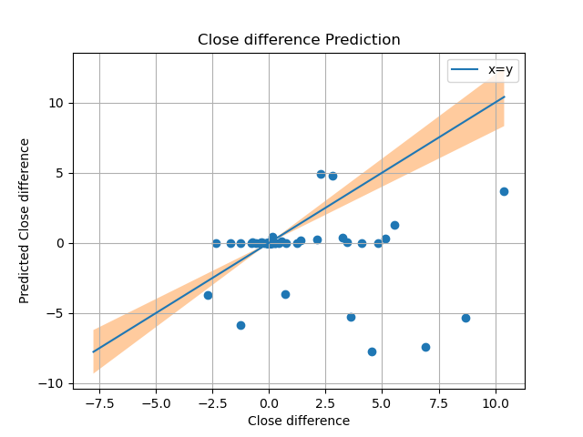
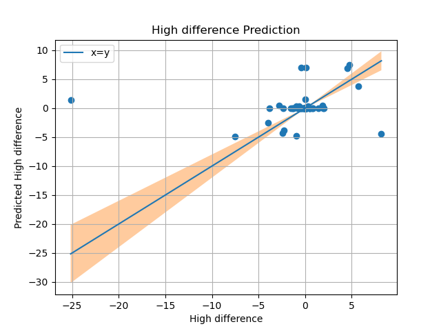
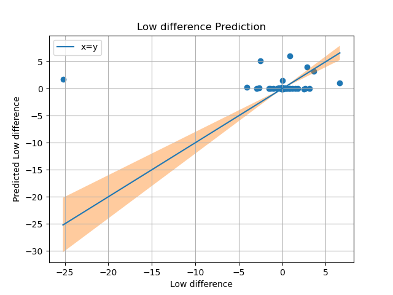
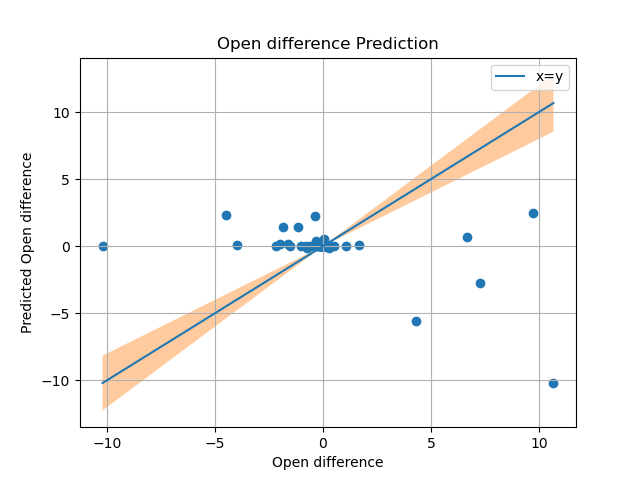
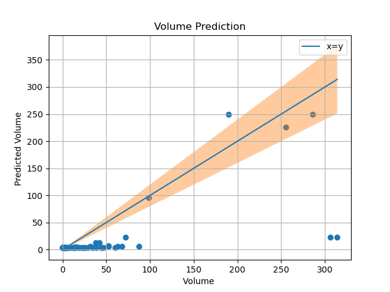
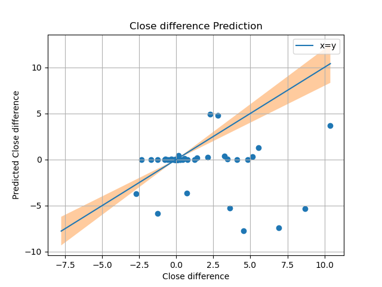
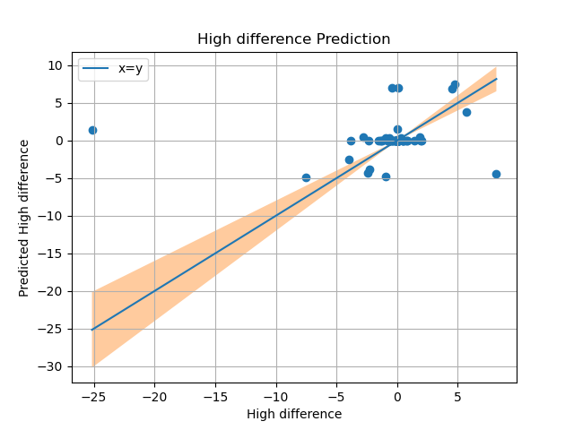
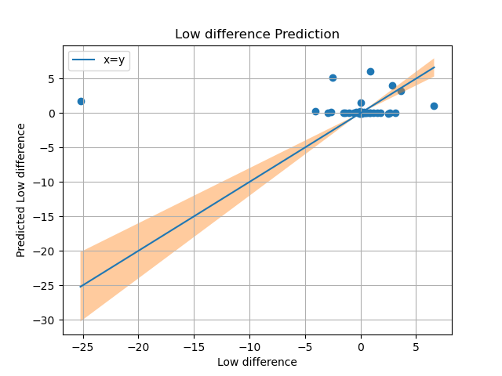
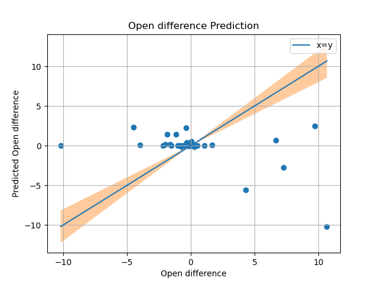
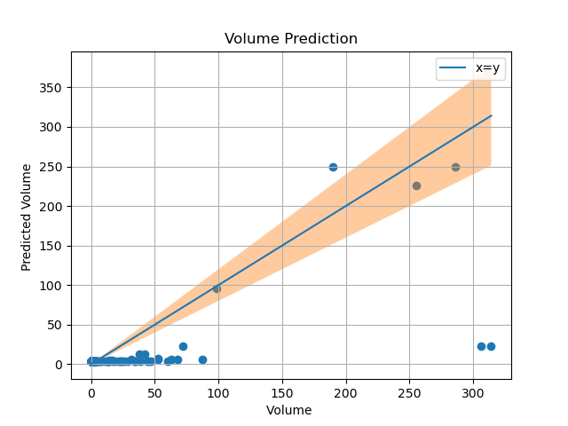

Dogecoin Prediction using Tweets and Gtrends
CS460 - Machine Learning
Group 3 - Abhishek Anil Deshmukh, Kajori Sarder, Prathmesh Patil
Motivation
We have seen in recent times that simple tweets by some known people have caused heavy disruptions in the Cryptocurrency market. This poses a natural question that whether the general perception of such securities on the digital market affect the market in real-time or not?
Data
Google trends
Google accounts for approximately 3/4th of the internet searches. This search is a useful indicator of what the people are interested in or what are their interests in particular topics? Google publishes all this information via Google trends. Moreover, this data can also be used to understand the evolution of public perception about various topics over time.
Kaggle
Open, high, low, close, and adj close prices along with traded volume since 17 Sept 2014 till last week from kaggle.
Tweets
A lot of people express their opinions on social media which paints quite a realistic picture of public perception. Gaining insights into public perception using social media platforms is an emerging tool in data science. Twint is the python library available for these activities.
Similar works
- 2018 This paper attempts to do sentiment analysis using Google trends and Twitter data for cryptocurrencies such as Bitcoin and Etherium.
-
2021 This paper developed LSTM neural networks
for the same using Weibo posts and price history
Shortcomings
- The data set is very small.
- Unnecessary objective tweets by promotional channels leading to an overwhelmingly positive data set.
Goal
We wish to accomplish sentiment analysis using google trends, Twitter, and price history data.
An ambitious task would be to implement the LSTM neural network as well.
We would also like to develop a filtering mechanism to filter out the objective tweets to improve the model.
Plan
Current plan and work distribution is shown in this illustration by Kajori.

Some papers which motivated our work:
Several researchers including Choi and Varian and Ettredge et al. found that web-based search data in the case of Ettredge et al., and Google Trends data specifically in the case of Choi and Varian, could be used to make predictions of several macroeconomic statistics including automobile sales and unemployment rates.(The above results give a natural motivation to study the correlation between statistical parameters of Cryptocurrencies and google trends data & tweet volume data.)
Behavioral economist Daniel Kahenman and Amos Tversky who established that, even the ones involving financial consequences are impacted by emotions and not by value alone. Link. (The insights from these researchers opens up the possibilities to find advantages through tools like sentiment analysis as it indicates that demand for a good, and therefore price, may be impacted by more than it’s economic fundamentals.)
Later researchers found specifically that purchase decisions people made were being impacted from information gathered online. Galen Thomas Panger found that Twitter sentiment correlated with people’s general emotional state. Additionally, he found that social media like Twitter tended to have a calming effect on the end-user rather than amplifying their emotional state.
Kouloumpis et al., Pak A. el al., B. Balasubramanyam et al., have shown that sentiment analysis is a cost saving option to study the impact of social media, however to effectively study these impacts one needs to classify the data as positive, negative or neutral categories.
Cryptocurrency Price Prediction Using Tweet Volumes and Sentiment Analysis
The promising technology behind cryptocurrencies, the blockchain, makes its likely that cryptocurrencies will continue to be used in some capacity, and that their use will grow.
What causes price changes in this new store of value is an area of debate. Researcher Ladislav Kiroufek found that Bitcoin is a unique asset in that its price behaves in ways similar to both a standard financial asset and a speculative one [2]The fact that cryptocurrencies do not behave like traditional currencies, predicting prices becomes extremely difficult.
The paper attempts to predict cryptocurrency price using sentimental analysis of tweets. It involves utilizing Twitter’s API and a Python library called ”Tweepy”2 to collect and store tweets which mentioned Bitcoin or Ethereum
DATA:
To solve the problem of predicting cryptocurrency price changes several different data sources are considered as possible inputs to the model. The first input considered is sentiment analysis of collected tweets about Bitcoin or Ethereum. The second was Google Trends data, and the third was tweet volume.
The first step in collecting the desired tweets was to find the hashtag for the cryptocurrencies. For this we utilize Tweepy - an open-source Python library for accessing the Twitter API, to collect Twitter data
Tweepy allows for filtering based on hashtags or words
Some of the hashtags used : #bitcoin #etherium #btc #eth. These hashtags themselves provided a large database.
Additional data collected for each post included the user ID, a unique identifier which cannot be changed, the time stamp, and how many times the tweet was ”retweeted” (someone posted the exact same tweet so that their followers could see it) and how many times it was ”favorited”.
The tweets are filtered for the language English for this analysis as tweets could be multilingual. Tweets were collected using a script scheduled to run automatically every 15 minutes and the process continued for 60 days.
Cleaning tweet data for analysis:
Tweets come in a format with characters which do not provide ”information” for a sentiment analysis
Valence Aware Dictionary for sEntiment Reasoning) sentiment analysis was used to analyze the collected tweets
VADER analysis provides several benefits including the fact that it not only classifies text as positive, negative, or neutral, but also measures the intensity, or polarity, of words used.
Tweets contain a large amount of noise, such as hashtags, URLs, and emotions. These characters make Twitter sentiment analysis a challenging assignment. Preprocessing of the data is a very important step as it decides the efficiency of the other steps down in line for sentiment analysis.
For this we used pre-processing packages readily available
the # tags , quotes and question marks were removed as it causes biased results for sentiment analysis.
Google trends data
Google provides trends data, which is an unbiased sample of search data, as far back as 2004. However the data is in search volume index calculated by dividing each data point by the total searches within a geographic region and time range. For a period of longer than 90 days the SVI returned are aggregated at a weekly level.
In order to compare these SVIs across periods and adjustment has to be made and the method detailed by Erik Johansson is used.
This method consists of 4 steps:
collect all of the daily SVI data you need in 90 day increments and combine them into a single increment covering the entire time period of interest.
line up the data for the same entire time period, but aggregated at a weekly level to get the weekly SVI.
line up the data for the same entire time period, but aggregated at a weekly level to get the weekly SVI.
Finally, multiple the daily SVI values by the adjustment factor
. In cases when the SVI was less than 1, the value was returned by the Google Trends query as < 1. To allow for an adjustment calculation we changed that value to 0.5.
Trends data was obtained for the terms “Bitcoin” and “Etherium” only.
Data Analysis:
With the data collected, cleaned, and adjusted where needed the data was analyzed to determine if it would be a valuable input to the final model
In the case of tweets there are two remaining issues after cleaning them. First it must be determined how many of the tweets actually have a sentiment at alll. If most of the tweets are not objective in nature, then a sentiment analysis of them adds little information to the model. Second, it has to be established that a relationship between the sentiment of tweets about cryptocurrencies and cryptocurrency price changes exists, otherwise it adds noise.
Sentiment Analysis of Tweets:
Quite often the tweets are posted by bots or do not contain any sentiment at all. After pre-processing the collected tweets, algorithm results showed the information gained from the tweets through sentiment analysis is still of limited value.
Although only half of the tweets collected provide positive or negative sentiment, of which, is below a level to consider the tweet objective overall, it is still possible that the positive or negative sentiment gathered could provide valuable information to the model if a relationship between sentiment and price changes is present.
The analyses establishes that Twitter sentiment is not consistent with price changes when prices are falling during the period of March 4, 2018 to March 24, 2018.
Google trends,Tweet volume and cryptocurrency prices:
To determine if a relationship is present between Google Trends search data and cryptocurrency price changes a correlation was run for both currencies. Pearson R coefficient and p-value are two primary such metrics.
Pearson correlation coefficient ranges from -1 to 1. +ve value indicates that the two variables are positively correlated, or that an increase in one variable is associated with an increase in the other variable. Negative correlation is defined accordingly.
The p-value tells us how likely it is that these correlation measures would have been found by random chance. So the smaller the p-value, the more confident we can be that a relationship is in fact present, and not the result of random chance.
The Pearson R of the correlation is 0.817 with a p-value of 0.000 which provides evidence of strong correlation between the Google trends and cryptocurrency prices.
The Pearson R was 0.841 with a p-value of 0.000 which provides evidence of strong correlation between the tweet volume and cryptocurrency prices.
Result:
Sentiment of tweets was determined to not be a reliable indicator when cryptocurrency prices were falling
Both Google Trends and tweet volume were highly correlated with price and this relationship is robust i.e. it is consistent with the price changes.
The overall dataset was split into two sections, 80 percent for training the model and 20 percent for testing it.
The paper also raises some ethical concerns such as whether the authors of these tweets are aware that their comments are used publicly. The paper claims that most people believe that their tweets are only visible to their immediate friends.
LSTM Based Sentiment Analysis for Cryptocurrency Prediction
Methodology:
Sina-Weibo Posts ->Data Collect(web Crawler) -> Generate Crypto Vocabulary ->Embedding-> LSTM Sentiment -> Analyzer Prediction (Majority vote)
The authors have crawled user posts from China’s popular social media site WEiboand created a crypto-specific sentiment dictionary with domain-expert knowledge, and then the LSTM recurrent neural network was used to model the sentiment information and make real time prediction for the price trend.
Data Collection & crypto sentiment dictionary:
large-scale Weibo corpus collection from crawling Chinese microblogs on Sina-Weibo with the cryptocurrency keyword, in particular, Bitcoin, ETH or XPR.
7 days’ Sina-Weibo posts from top 100 crypto investors accounts as training data and the next 1 day’s posts as testing
Creation of a sentiment dictionary specially for the crypto domain by the corpus based approach: (There are different approaches to creating sentiment dictionary, the one being followed here uses the above approach)
create the vocabulary of the crypto words.
create an index mapping dictionary in such a way that the frequently occurring crypto words are assigned lower indexes, similar to the traditional natural language processing.
generate a crypto word encoding for each individual post and use that encoding vector as the training data for the RNN model in sentiment analysis.
LSTM based sentiment analyzer:
The social media post is first tokenized(broken down into words) according to crypto word vocabulary and fed into the embedding layer, which converts the word token into the crypto word embedding.
The LSTM based recurrent network is trained by taking the sequence of the embedding feature vector.
Use of Precision and Recall to measure the performance of LSTM sentiment predictor
Results:
| Method | Precision | Recall |
|---|---|---|
| Auto Regression | 73.4% | 80.2% |
| LSTM Sentiment Analyzer | 87.0% | 92.5% |
Using Web based Search data to predict macroeconomic statistics:
This study investigates the potential of using data about Web searches to predict an important macroeconomic statistic, specifically the number of unemployed workers in the U.S.
assumption is that people reveal useful information about their needs, wants, interests, and concerns via their Internet behavior, and that terms submitted to search engines reflect this information.
attempt to determine whether the frequency of search terms likely used by people seeking employment could enable analysts to anticipate the content of forthcoming federal monthly unemployment reports.
Regressing official U.S. monthly unemployment data against Web-based job search data from preceding weeks to study correlations between search term data with unemployment data.
Data Collection:
Source of Employment data: Bureau of Labour Statistics, US.
Search engine keyword usage data was extracted from WordTracker’s Top 500 Keyword Report published by Rivergold Associates, Ltd.
list of identified six terms likely to be used by people seeking work, namely (in decreasing frequency of usage): job search, jobs, monster.com, resume, employment, and job listings.
Weekly job search activity is found by summing the number of searches performed using these six jobsearch terms.
Goals:
The paper tries to establish correlation between the websearch data and Unemployment data using p-value.
Results:
Males aged 20 and over appear more likely to use Internet search engines when seeking employment.
It is possible that women use different job search terms than men.(Correlation is not strong)
This study’s results suggest the viability of using search terms to predict other important macroeconomic data.
What is sentiment analysis?
Sensitivity analysis is the process of determining the opinion or feelings of a piece of text.
I.e determines the emotional tone behind the message.
Can be +ve, -ve and neutral.
Useful to understand the insight of customer opinions.
Sentiment analysis assesses and labels the connotation of text using natural language processing (NLP) and text analysis
Reasons to work with Sentiment Analysis:
Assess Real-Time Public Opinion: While launching a new product or service or a marketing campaign, we can quickly track the public’s sentiment on a real-time basis.
Carry out market research: Sentiment analysis what’s trending in the market, which can be used to make products.
Tracking Customer Service: If your brand is using social media for customer service inquiries, you can easily track the negative and positive impacts of your efforts.
The process behind Sentiment Analysis
Get dataset from all the sources - Customer support chat, product reviews customer feedback forms, Social Media activities, Market research surveys etc.
Stemming - Grouping of word from the same stem. ‘Worked’ and ‘working’ are grouped together as one under ‘work’
Remove punctuations
Lowercase everything in text
Remove stop words such as ‘a’. ‘an’, ‘the’
Misspelt words - Correct the spellings of misspelt words and bring the same words together.
Works on parts of speech tagging - Each word is assigned the type of part of speech.
Removing the parts of speech - Depending on every use case, we may decide to drop certain parts of speech, like pronoun, adverb etc.
Using various libraries pre-built in R and Python, find out subjectivity, polarity, topics of text
Current experimental results
Upon using Linear regression with data from google trends, the predictions havent been to any resonable standard, we hope to see a increase in accuracy as we put in data from other crypto currencies and twitter sentiment analysis
 








